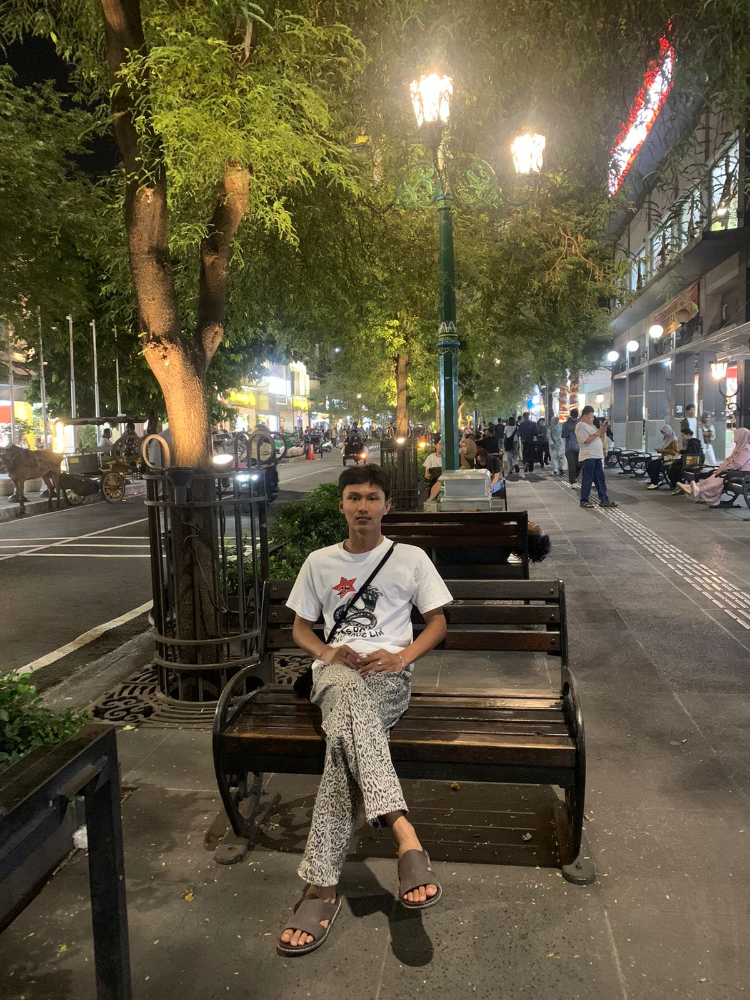

Profile
Nama: Muhammad Rafli
Tempat Tanggal lahir: Tangerang, 04 Februari 2024
Alamat: Jalan Aria jaya santika Kp.Bolang RT 04 RW 01 Kec.Tigaraksa Kab.Tangerang
Saya alumni SMK Pustek Mitra lulusan tahun 2023/2024 yang berasal dari jurusan Teknik Komputer Jaringan (TKJ)